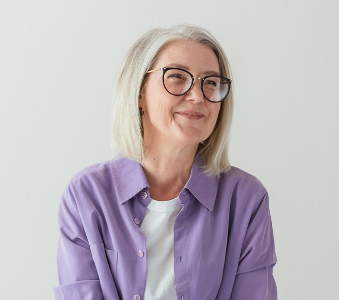
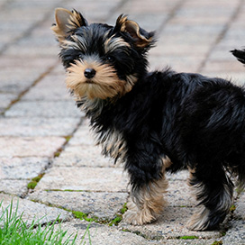
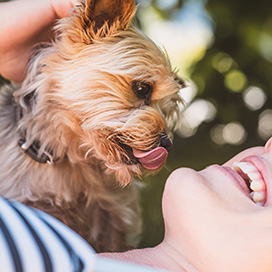
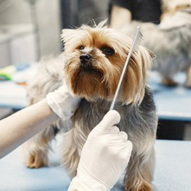

Le Yorkshire Terrier, un amour de chien
Le Yorkshire Terrier est un chien de petite taille mais grand par
son cœur.
Son pelage long et soyeux
de couleur bleue, grise et feu, lui donne une allure unique.
Si vous êtes en amour pour ses petites boules de poils que sont les Yorkshires, alors vous êtes au bon endroit !

La maîtresse des Villardières
Je m’appelle Françoise Vieillard et je suis avant tout une
passionnée !
Cela fait maintenant 20
ans
que je me consacre à ces petites bêtes. J’ai à cœur d’élever mes chiens dans un cadre de vie
familial et sécurisant.
Ma maison, en Franche-Comté, est située en pleine campagne où les arbres et les fleurs foisonnent, offrant un vrai havre de paix pour le bon développement des Yorkshires. Ils grandissent ici dans le bonheur !
Je serais ravie de vous faire découvrir mon élevage et qui sait peut-être, votre futur compagnon ?
Les Yorkshires des Villardières sont issus des plus prestigieuses lignées de champions internationaux de beauté

L'élevage des Villardières
Découvrez les lieux et l'univers des Villardières
L'élevage

Adoption
Faîtes la rencontre de votre futur compagnon
Adopter un chiot

Soin et entretien
L'hygiène de votre Yorkshire, comment faire ?
Le toilettage